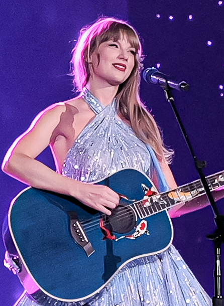

The Eras Tour is the ongoing sixth concert tour by the American singer-songwriter Taylor Swift, who described it as a journey through all of her "musical eras". A homage to her 10-album discography, the Eras Tour is Swift's most expansive tour yet, with 151 shows across five continents. It is the highest-grossing tour of all time and the first to surpass $1 billion in revenue.Announced after the release of her tenth studio album, Midnights (2022), the Eras Tour is Swift's second all-stadium tour after the 2018 Reputation Stadium Tour. It commenced on March 17, 2023, in Glendale, United States, and is set to conclude on December 8, 2024, in Vancouver, Canada. The show spans over 3.5 hours, with a set list of 44 songs grouped into 10 distinct acts that portray the albums conceptually. It received rave reviews from critics, who emphasized its concept, production, aesthetics and immersive ambience, as well as Swift's musicianship, vocals, stage presence and versatility.The tour had a wide cultural, economic and political impact, evident in the form of unprecedented demand, ticket sales, venue attendance records, and technical obstacles that led to imposition of price regulation and anti-scalping laws; elevated economies, businesses, and tourism; domination of news cycles and social media; and a range of accolades and tributes from governments and organizations. Ticketmaster, an official ticketing partner, was scrutinized for its controversially ineffective sales of the tour's tickets and an alleged monopoly in the concert industry. Swift announced and released various works during the tour: extended editions of Midnights, the re-recorded albums Speak Now (Taylor's Version) and 1989 (Taylor's Version), the music videos for "Karma" and "I Can See You", and "Cruel Summer" as a single. An accompanying concert film was released to theaters worldwide on October 13, 2023; it was met with critical acclaim and became the highest-grossing concert film in history.
Swift unveiled various musical works during the tour. On the day of the opening show, she released four songs to celebrate the tour's launch: the re-recordings of "Eyes Open" and "Safe & Sound", both originally from the 2012 soundtrack The Hunger Games: Songs from District 12 and Beyond; a re-recording of "If This Was a Movie", one of the deluxe tracks from Speak Now (2010); and "All of the Girls You Loved Before", a previously unreleased outtake of Lover. A special CD edition of Midnights, subtitled The Late Night Edition, was released during the Eras Tour. It was only purchasable in-person at merchandise stands at certain shows, beginning in East Rutherford, New Jersey, on May 26, 2023. It exclusively contained the new bonus track "You're Losing Me", which became a "ravenously anticipated" song; Variety reported that "fans were so eager to get their hands" on the CD, causing queues at the stadium the day before the merchandise store opened. On May 5, 2023, at the first Nashville show of the tour, Swift announced her third re-recorded album, Speak Now (Taylor's Version), and its release date as July 7, 2023.She also premiered two music videos, both of which she wrote and directed, during the tour. She premiered the videos for "Karma" featuring American rapper Ice Spice and "I Can See You" before the acoustic set at the first East Rutherford show and first Kansas City show, respectively.On August 9, 2023, at the final Los Angeles show, Swift announced 1989 (Taylor's Version) as her fourth re-recorded album, which was released on October 27, 2023, exactly nine years after the release of the original 1989 album. On November 3, 2023, Hits reported that a live album of the tour has been in talks.
Taylor Swift- lead vocals, guitar, piano
Max Bernstein- guitar, keyboard, Matt Billingslea- drum, Karina DePiano- piano, Amos Heller- bass Mike Meadows- guitar, keyboard, Paul Sidoti- guitar, backing vocals Jeslyn Gorman- backing vocals (except the Seattle shows and Latin American shows) Kamilah Marshall- backing vocals, Melanie Nyema- backing vocals, Eliotte Woodford - backing vocals
Amanda Balen dance captain, Taylor Banks, Karen Chuang, Audrey Douglass, Tori Evans, Tamiya Lewis, Sam McWilliams, Sydney Moss, Natalie Peterson, Jan Ravnik Natalie Reid, Kameron Saunders, Kevin Scheitzbach, Raphael Thomas, Whyley Yoshimura